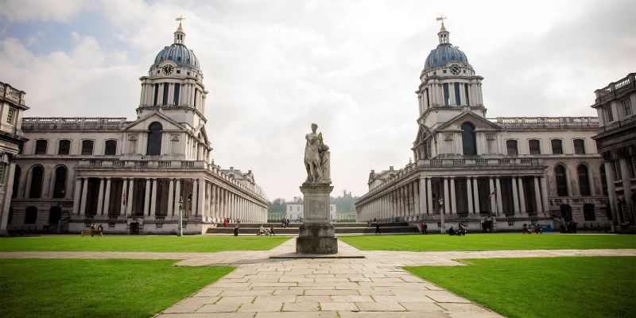

Acasă
Acasă Țări
Țări Catalog
Catalog Galerie foto
Galerie foto Experiente
Experiente Despre
DespreUniversity of Greenwich



Descriere
Universitatea a fost fondata in 1890 si s-a remarcat prin inovatii continue, printre care si introducerea invatamantului fara frecventa si a programelor sandwich. In timp, universitatea s-a extins si a inceput sa ofere diferite specializari din domeniile: Pedagogie, Arhitectura, Inginerie, Istorie, Stiinte maritime, Drept, Afaceri si Finante. Bazele universitare dispun de biblioteci si calculatoare de ultima generatie.
Universitatea este in mod constant clasata pe locul 1 in ceea ce priveste satisfactia studentilor din Londra - regasindu-se in top 5 timp de 5 ani consecutiv. Printre cadrele didactice se regaseste si un detinator al premiului Times Higher Education pentru Inovatie in Educatie si numerosi detinatori ai titlului de National Teaching Fellows, o distinctie ce recunoaste excelenta academica.
Informații generale
Tara: Marea Britanie
Limba de predare: engleza
Ani de studiu: Bachelor: 3-4, Master: 1-2
Inceput an: septembrie
Burse: Da
Campusuri: Avery Hill, Greenwich, Medway
Aeroporturi: Londra Heathrow / Gatwick / Luton
Cazare: 321-774 lire
Programe de studiu:
International Agriculture
Animal Management
Sustainable Electrical Power Engineering
Architecture
Countryside Management